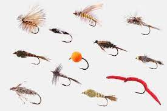
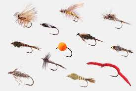

FindaFly
Your guide for choosing the right fly for the right time and place
Find your state's fishing regulations HERE
 


Fly fishing is rewarding and offers a unique connection to nature.
Selecting the right fly can be tedious and overwhelming for both
new and seasoned anglers. After years of trial, error, and careful
observation, we at FindaFly have narrowed fly selection down to three factors:
- State
- River
- Season
Each season brings new food, changes in habitat, and new behavior in fish. These
changes also alter how fishermen should approach the water and the techniques they use.
| Spring | Summer | Fall | Winter |
|---|---|---|---|
| High Water | Low Water | Low Water | High Water |
| Cold Temps | Warm Temps | Warm Temps | Cold Temps |
| Medium Visibility | High Visibility | High Visibility | Low Visibility |
| *Changes are dependent on recent weather activity | |||
Knowing as much as you can before leaving the house is essential to success. Any angler
must know what insects are hatching, what gear to bring, and how to cast. Reading the river
is also an essential skill sometimes overlooked.
Here is an in-depth video on how to read the water while you're out there: